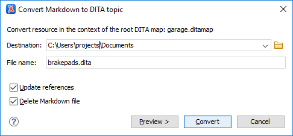

Working with Markdown Documents in DITA
Oxygen XML Author includes some unique features that allow you to easily integrate Markdown documents in a DITA project. This is especially helpful for teams that have contributors who are familiar with the Markdown syntax, but they want their output to be generated from DITA projects. The integration between the Markdown editor and DITA includes actions to export or convert Markdown documents to DITA topics and the DITA tab in the Preview pane provides a visualization of how the DITA topic will look after conversion. Likewise, the XDITA tab in the Preview pane provides a visualization of how a Lightweight DITA topic will look after conversion. Keys that are defined in the root map are also resolved in the Preview pane.
Export Markdown as a DITA Topic
The Markdown editor includes an option to quickly convert the current Markdown document into a DITA topic. The Export as DITA Topic action is available in the contextual menu.
The conversion creates a new XML file that is defined as a DITA topic and opens it in the Text editing mode. You can then work with the document as you would with any other DITA topic, although you may need to manually correct some issues where the parser could not properly map Markdown syntax to DITA markup.
Working with Markdown Documents in the DITA Maps Manager
- Insert Reference to Markdown Document - You can use the
New, Reference, and Reference
to the currently edited file actions from the Append
Child, Insert Before, or Insert
After submenu when invoking the contextual menu in the DITA
Maps Manager to insert a reference to a Markdown document at the selected
location in the map. Markdown documents will be inserted as a topic reference
(
topicrefelement) with theformatattribute set tomarkdown. - Validate Markdown Documents in DITA Maps - When you use the
 Validate and Check for
Completeness action from the DITA Maps Manager
toolbar to check the integrity of the structure of a DITA map, Markdown
documents that are referenced in the DITA map will be converted to DITA
topics in the background and validated the same as any other DITA topic.
Validate and Check for
Completeness action from the DITA Maps Manager
toolbar to check the integrity of the structure of a DITA map, Markdown
documents that are referenced in the DITA map will be converted to DITA
topics in the background and validated the same as any other DITA topic. - Transforming DITA Maps with Markdown Documents - When transforming DITA maps that have Markdown documents referenced, the transformation will convert the Markdown documents to normal DITA output without you needing to manually convert the Markdown documents to DITA topics.
-
Manually Convert Markdown Documents to DITA Topics - If you need to use DITA semantics that are not possible in Markdown syntax (such as content references, related links, and other DITA-specific syntax), you can manually convert the Markdown document into a DITA topic. To do so, right-click the Markdown document in the DITA Maps Manager and select . This will open a dialog box that allows you to configure options for converting the document to an XML file that is defined as a DITA topic.
Figure 1. Convert Markdown to DITA Topic Dialog Box This dialog box includes the following options:
- Destination
- The destination path for the new DITA topic.
- File Name
- Presents the current name and allows you to change it.
- Update references
- Select this option to update all references of the file in the DITA map and in the files referenced from the DITA map.
- Delete Markdown file
- If selected, the Markdown version of the file is deleted when the document is converted into a DITA file. If deselected (default value), when the document is converted into a DITA file, the original Markdown file is also preserved in its current location.
- Preview
- Select this button to display a preview of the changes Oxygen XML Author is about to make.
- Convert
- Select this button to perform the conversion. If the Markdown file has
format="markdown", it will be converted to a DITA topic. If it hasformat="mdita", it will be converted to a LightWeight DITA topic.
Converting Multiple Markdown Documents to DITA
Oxygen XML Author offers an add-on that contributes actions in the Tools menu and contextual menu to enable batch conversion between various formats, including Markdown to DITA. For more information and instructions for installing the add-on, see Batch Converter Add-on.